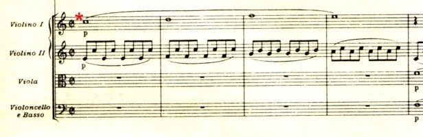
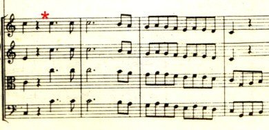
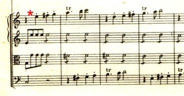
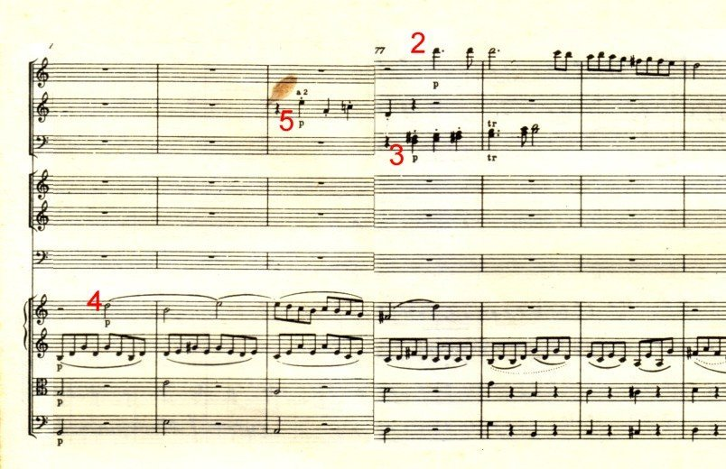
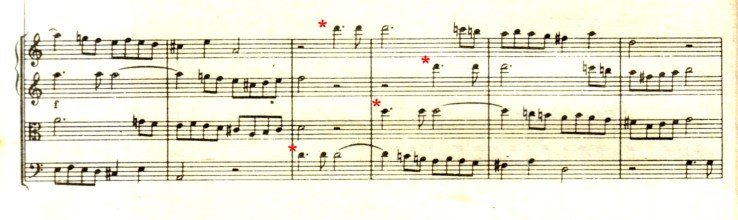
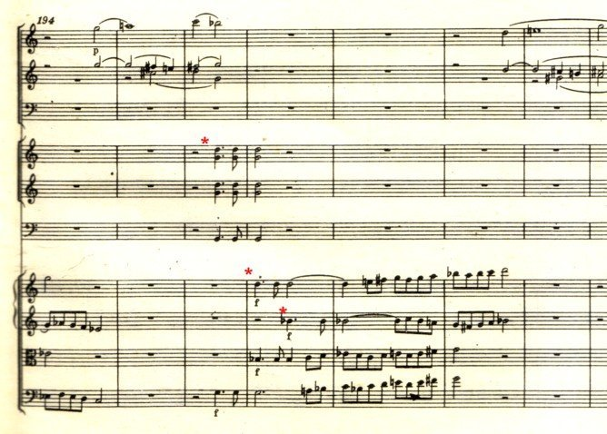
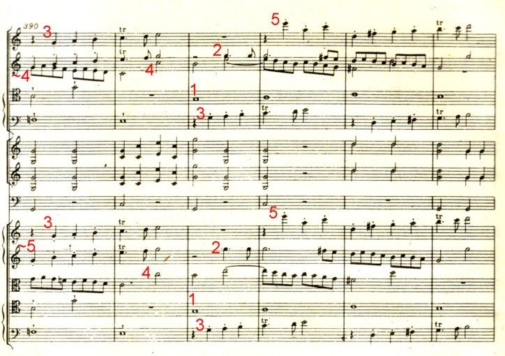

http://tw.youtube.com/watch?v=Fcly8-RGhgw
K551，C大調 第41號交響曲 第四樂章。此連結的「影」「音」沒有完全同步...
對這樂章（尤其是鬼斧神工的coda）的讚辭，包括「古典樂派的巔峰」，「西方音樂最偉大的奇蹟之一」，甚至「上帝存在的明證」（這種迷湯話...）。
我兩三年前曾寫了這篇 史上最瞎！業餘導聆
試著一段一段地把這樂章解剖，寫給幾位不太聽古典音樂的朋友...今天從垃圾堆中把它挖出貼上，用來證明以前自己曾經多無聊並不自量力...
第四樂章是奏鳴曲式，
構造是 呈示部（可以反覆一次）- 發展部 - 再現部 - 尾聲 coda
0:11（時間就是youtube連結的播放時間） 呈示部。四個音符的第一主題*。
譜例：弦樂四聲部
（第一小提琴，第二小提琴，中提琴，大提琴與低音提琴）。


0:41~0:56 由第一主題發展出來的短小賦格曲風樂段。
不常聽古典音樂的朋友：
這是所謂複音音樂了，
不是「一個主旋律+伴奏合音」，
您會聽到好幾個旋律線交織。
我們小學音樂課都玩過輪唱（卡農），
那是大家唱同一個旋律，不過不同時開始，
所以同時會有幾條旋律在跑，這也算複音音樂囉。
1:00 第三主題*。譜例：弦樂四聲部。

這十幾秒內可聽到第二主題的「兩部卡農」，
就是兩群樂器以幾拍的時間差先後唱著第二主題。
1:15 第四主題和第五主題先後出場，只差三拍半，約兩秒鐘。
也可以把雙簧管的四個音符（5）+巴松管的上升音形（3）整個當成第五主題
譜例：
長笛-雙簧管-巴松管-
法國號-單簧管-定音鼓-
弦樂四聲部。

注意聽的話，可聽到第二第三主題也交織著出現。
1:30 第四主題，大約是兩部卡農。
就是兩個第四主題在輪唱的意思。
（再仔細讀了譜，其實有四部，我用聽的沒聽出來！）
2:10 呈示部的尾聲。以第二主題為主，
可以聽到有音形顛倒inversion的第二主題
（第二主題是向下滾落，顛倒的第二主題則向上鑽升。
像是「水中倒影」嘛。這是複音音樂的常用手法）
2:30 呈示部整個反覆一次。
4:51 發展部。
顧名思義，就是各主題在這裡要拿出來作文章，發展發展嘛。
5:05起，這裡以變形處理過的（正的，反的，完整的，截短的）第二主題，
展開四部或三部卡農為主
聽聽看，是不是同一個旋律唱四次，彼此錯開1拍。

或三次

5:52 再現部。結構要和呈示部類似，但得做出些變化。
這次是在第二主題出現以前，
在6:02開始了第一主題的四個音符，不斷轉調，
最後轉回到C大調的樂段。
6:19 和呈示部類似，以第三和第二主題為主。
6:37 和呈示部類似，第四第五兩個主題再度出現，
交織著第二第三主題。
6:57 和呈示部類似，以第四主題的四部卡農為主。
7:34 再現部要結束了。
和呈示部類似，以第二主題和它的「水中倒影」為主。
7:57 進入coda。一開始是第一主題的「倒裝」
（第一主題不是四個音符嗎，先唱後兩個音符，再唱前兩個音符）。
8:06第一小提琴柔和唱出「正」的第一主題，然後：
8:09 中提琴先唱第四主題，一拍後，
銅管樂器的第一主題威風凜凜地進場了。
8:13 第三主題出現，大提琴唱的。
第一主題由木管接手，第四主題轉給第二小提琴。
8:18 第五主題和第二主題相繼出現，大提琴唱的
（第二主題第一次出現時，這個錄音幾乎聽不到）
.....接下來五個主題由各個樂器輪流接手（每個主題都是：主調-屬調-主調-屬調..四小節變換一次調性和樂器）

8:37 史上最華麗五主題賦格風coda結束，
熱熱鬧鬧地結束全曲。
史上最瞎！業餘樂曲導聆結束！呼！
孟爺您太強了！
起立鼓掌三分鐘